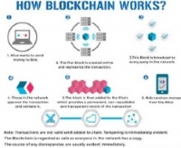
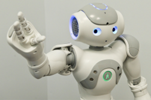

Blockchain technology is like the internet in that it has a built-in robustness. By storing blocks of information that are identical across its network, the blockchain cannot: Be controlled by any single entity.
Has no single point of failure. Bitcoin was invented in 2008. Since that time, the Bitcoin blockchain has operated without significant disruption.
(To date, any of problems associated with Bitcoin have been due to hacking or mismanagement. In other words, these problems come from bad intention and human error, not flaws in the underlying concepts.)
The internet itself has proven to be durable for almost 30 years. It’s a track record that bodes well for blockchain technology as it continues to be developed.
Click to see more information--->
Click to see additional information on Block chain
Autonomous robot. An autonomous robot performs behaviours or tasks with a high degree of autonomy, which is particularly desirable in fields such as spaceflight, household maintenance (such as cleaning), waste water treatment and delivering goods and services.
A fully autonomous robot can[citation needed]: Gain information about the environment Work for an extended period without human intervention Move either all or part of itself throughout its operating environment without human assistance Avoid situations that are harmful to people, property, or itself unless those are part of its design specifications An autonomous robot may also learn or gain new knowledge like adjusting for new methods of accomplishing its tasks or adapting to changing surroundings.
Click to see additional information on Autonomous robots